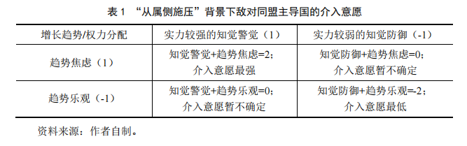
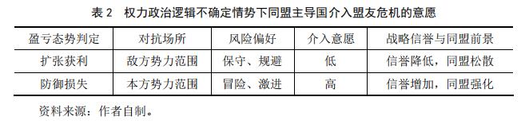
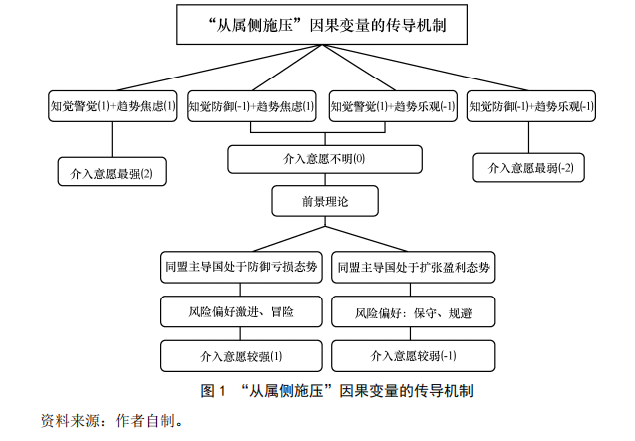
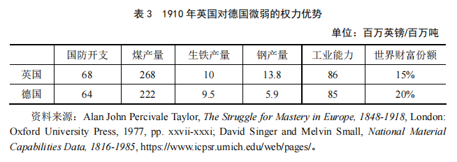

收录于合集

编者按
当一个地缘政治大国试图通过战争危机向敌对同盟的从属国施压时，敌对同盟的主导国在何种条件下会展现出“不惜一战”的强势，又会在何种条件下表现出有限回应的“息事宁人”？《从属侧施压——同盟强化还是同盟瓦解？》是一篇研究进攻性楔子战略成败条件的理论文章，该文章阐释了当盟友受到敌对大国施压后，本方同盟主导国差异性反应逻辑机制与行为选择框架。 在原文第46-48页（下文红色部分）《辅助变量检验：“乌克兰危机”与美欧的“有限反应”》中较好地分析了美欧与俄国在“乌克兰危机”过程中的行为选择，并对“再度发生乌克兰危机”时各方行为选择进行了比较准确的预测和解释， 今日国政学人再次推出这篇2021年发表的成果，以飨读者。同时希望有更多的中国国际关系理论研究成果在实践中得到有力验证。
作品简介 ****
作者： 姜 鹏，中山大学国际关系学院副教授。
来源： 《国际安全研究》2021年第3期，第25-51页。
导读
在研究同盟分化的议程中，关于“楔子战略”的类型化研究很多，但是关于不同类型“楔子战略”背后差异化的因果机制及其传导过程的研究却很少。“从属侧施压”是“进攻性楔子战略”的一个重要组成部分，它特指利用危机向特定类型敌对联盟中的次要盟友进行安全施压，进而促成敌对联盟内部关系紧张直至瓦解的一种同盟分化手段。通过对“从属侧施压”这一微观同盟理论各要素间共变关系的研究发现，大国间“现有权势对比”“权力变动趋势”和“权力盈亏态势判定”是决定“从属侧施压”战略实施效果的三个核心变量。同盟主导国在“实力较强”且“趋势焦虑”情势下介入盟友危机的意愿最强，反之则最弱。对于“实力较强但趋势占优”和“实力较弱且趋势焦虑”两种不确定情况，借助于“前景理论”对同盟主导国“权力盈亏态势”进行辅助判别，则具有较强的解释力。该理论的提出，不仅对现有“进攻性楔子战略”具体实施条件、时机把握与策略选择有着较强的现实指导意义，也有助于战略实施方避免因条件与时机误判而促成事与愿违的敌对同盟强化。
01
问题的提出
研究“联盟的瓦解”与研究“联盟的起源”同样重要，尤其是对于奉行不结盟的国家来讲，研究联盟瓦解问题可能更加重要。本文的问题源于如下困惑：为什么一战前德国在两次“摩洛哥危机”中向法国极限施压不仅没能实现离间英法协约关系的目标，反倒促成了英法关系从松散的“协约”向实质性安全同盟转变；而在二战结束后美国通过对南斯拉夫以及在“第二次台海危机”对中国的极限施压，却促成了苏南同盟和中苏同盟走向瓦解？ 本文研究的问题是：如果利用国际危机对敌方阵营中的次要盟友实施战争威胁是一种离间同盟的手段，那么在何种条件下实施“从属侧施压” 可能实现从心所欲的同盟瓦解，又在何种条件下实施“从属侧施压”可能导致事与愿违的同盟强化？
冷战初期，如何分化瓦解中苏同盟关系是美国战略学界长期研究的一个重要问题。通过查阅冷战档案发现，美国前国务卿约翰·杜勒斯在1953年12月7日呈送美国总统艾森豪威尔、英国首相丘吉尔以及法国外长皮杜尔的文件中称：“如果美国可以对中国施加更大的战争压力，压力和紧张将促使中国向苏联提出更多政治、军事与经济援助的要求，而后者是不可能满足这些要求的。如果苏联拒绝满足这些要求，就可能通过进一步增大战争压力并利用分歧催化中苏同盟内部的紧张关系，从而促成中苏同盟分裂。” 五年后，中苏同盟出现裂痕的直接原因正是由于苏联拒绝满足中国在“第二次台海危机”时的诉求，以至于在美国不断增加安全压力情势下——美国曾公开表示可能在台海冲突中动用核武器——促成了中苏同盟事实上的解体。
杜勒斯在百慕大发表演说时也曾反复强调：“加深共产主义中国与苏联之间同盟裂隙最好的方法就是将中国置于最大的进攻压力之下，而不是减轻这样的压力。” 1950年6月前，包括国务卿艾奇逊——国共内战后期，他主张美国逐渐放弃支持中国国民党政权，同时对中国共产党在内战中的节节胜利实行不干涉的“静待尘埃落定”的绥靖政策——在内的许多人倾向认为，通过对新中国引诱、拉拢、绥靖、援助与支持的政策，有助于分化中苏意识形态同盟关系。但杜勒斯却认为，“这只会导致美苏竞相讨好中国，从而使中国自抬身价、左右逢源。铁托不是因为我们对他友好才同斯大林决裂的，恰恰相反，是因为我们对他在巴尔干的回击非常强硬。”
这种“从属侧施压”促成同盟瓦解的事例并非凤毛麟角的个案，而是在大国权力竞争历史中呈现出长期反复发生的基本态势。例如，当南斯拉夫领导人铁托表现出意欲兼并阿尔巴尼亚和建立巴尔干联邦——尤其是当他向意大利东北部弗留利—威尼斯朱利亚大区（Friuli- Venezia Giulia）共产党组织和希腊境内游击队提供庇护、救援、武器与军事支持——的野心后，南斯拉夫在巴尔干的扩张遭到了英国和美国的强烈回击与战争威胁。英国外交大臣欧内斯特·贝文（Ernest Bevin）在其演说中大谈共产主义对希腊的威胁。同时美国开始向欧洲增兵并直接卷入希腊事件之中。 当西方大国强势军事介入铁托在巴尔干地区的扩张后，尚未掌握核武能力的斯大林拒绝了给予其南斯拉夫盟友预想中的有力支持，这直接导致了1948年苏南同盟关系的破裂。
与上文中“从属侧施压”导致敌对同盟瓦解的政治现象相反，历史上还存在着许多“从属侧施压”催生敌对同盟强化的案例。比如，在第一次世界大战前的两次“摩洛哥危机”中，德意志第二帝国试图通过在北非挑起地缘政治危机，从而迫使法国意识到追随英国不能为其提供有效的安全保障与战略支撑，以期通过羞辱法国的方式拆散日益接近的英法协约关系。但问题在于，德国对法国的战争威胁不仅没有导致英法协约关系的疏离，反而进一步推动英法向事实上的准军事同盟关系发展。
本项研究关注的第一个问题是：为何有些国家对敌方阵营中次要盟友实施“从属侧施压”促成了同盟瓦解，而对另一些国家实施“从属侧施压”却促成了同盟强化？如果相同的政治行为，却导致了不同的政治结果，那就意味着在相同的行为与不同的结果之间存在着尚未被阐明的差异性政治条件。只有通过运用案例内过程追踪法，才能揭示在“从属侧施压”与“同盟关系强弱”之间的因果传导机制与中介变量。通过对“从属侧施压”成败的政治条件及其类型化研究，有助于帮助我们更好地理解在两极竞争体系下，超级大国在何种条件下对战略竞争者的次要盟友极限施压可能促成敌方同盟瓦解，又在何种政治条件下可能会促成敌方同盟强化。
“从属侧施压”是“进攻性楔子战略” 的一个重要组成部分。当前国内外学界对“进攻性楔子战略”的研究已经比较成熟，其成果集中于理想状态下对该战略程度不同的手段分类与相对应的效果描述，但却忽略了此种战略失败及其可能引发的风险问题，即“从属侧施压”不仅可能促成敌对同盟的瓦解，还可能导致敌对同盟的强化。如果历史上既存在许多通过“从属侧施压”促成敌对同盟强化的案例，也存在诸多诱发敌对同盟瓦解的案例，那么就意味着人们尚未对长期以来所熟知的“进攻性楔子战略”赖以成功的政治条件和运行机理具有充分的认知。
现有的“楔子战略”类型化研究多偏重于强调在“胡萝卜与大棒”奖惩手段之间进行纵向程度划分， 或是区分政治、经济、安全与心理等横向楔子策略， 抑或强调整体运用从偏向合作的“防御性楔子战略”到偏重对抗的“进攻性楔子战略”的综合性分化手段。 前期成果对“楔子战略”的各种类型与手段进行了较为全面的归纳总结，但既有研究尚未进一步对“进攻性楔子战略”执行过程中起作用的政治条件差异和因果机制传导过程进行更加精细的匹配——这种相同战略手段却出现不同结果的“南橘北枳”困惑本身就值得学界加以进一步追问——也没有指出在何种条件下大国选择“进攻性楔子战略”效果更好，何种条件下效果更差。
不可否认，综合运用从“利诱与观望”到“绥靖与补偿”，再到“威逼与胁迫”，直至“颠覆与征服”的“楔子战略”，同时强调工具箱中有着众多工具与备选手段固然重要——这就相当于急救医生的医药箱里储备了各种血型的血浆一样——但究竟应该在何种政治条件下去选择“进攻性楔子战略”更加有利，何种条件下实施这一战略将可能事与愿违，即选择与实践对象相匹配的具体工具的细化研究，对于实施“从属侧施压”与同盟分化的大国则更加重要。因为，如果不能对“进攻性楔子战略”成败背后的政治条件进行类型化研究，那么“从属侧施压”战略在政治操作层面就永远也无法摆脱“碰运气蒙对”的侥幸成分。
若想要回答第一个问题，就先要弄清第二个问题：面对敌对大国对本方盟友的挑衅与施压，同盟主导国究竟应该选择为本方盟友强势站台并不惜作战争回应，还是应该选择息事宁人以避免冲突升级，这两种观点在学界均存在一定的支持声音。例如，蒂莫西·克劳福德（Timothy Crawford）认为，敌对大国对区域盟友的威胁与挑衅及其内蕴的抵消效应，可能导致美国传统的离岸制衡体系遭遇挑战，因此，美国不可能在其欧亚大陆盟友遭遇战争威胁时长期保持无为的袖手旁观状态。当其盟友遭遇挑衅或威胁时，它必须兑现同盟承诺与战略信誉，并对挑衅者给予有力回击，才能确保其同盟不被敌对大国的“楔子战略”所分化。
斯蒂芬·沃尔特（Stephen Walt）和罗伯特·阿特（Robert Art）的观点同克劳福德正好相反。沃尔特认为，即便美国盟友遭到了敌对大国的威胁与挑衅，也不用担心它们会背叛。美国盟友常常希望通过表达对同盟承诺的质疑，借此来让美国为它们做得更多。美国不必过于在意有些区域盟友时常刻意摆出的“惊诧脸谱”，因为放弃美国的保护与后者的根本安全利益完全相悖。 阿特则从中美发展的态势推断，美国单极霸权结束的时间最早也要到2056年。因此，他认为美国不应在欧亚大陆对所有盟友所遭遇的地缘政治危机都亲力亲为且面面俱到，而是应该将防务安排的责任分摊给地区盟友。在此观点下，如果美国做得稍稍不可靠一些，并让地区盟友受到一些来自同盟外国家的安全威胁，反而会刺激其盟友增加防务分担的意愿，而美国在这一过程中只需要采取离岸平衡的选择性干预即可。
从理论的现实需求角度讲，“从属侧施压”理论可能为中国应对和化解当前日益加剧的崛起困境提供正面与负面启发。一个国家利用外部力量提升相对战略势能的方式无外乎有两种，要么通过构建安全同盟增加己方力量，要么通过“楔子战略”分化敌方力量。鉴于中国长期奉行不结盟安全政策，因此，有条件地分化瓦解战略对手的同盟关系，同时避免因错误施压而强化对手的同盟关系，成为未来中国化解崛起困境的一个重要方式。
在中美两极加速确立的国际格局转型期，美国在中国周边的安全同盟体系正在进入冷战结束以来的新活跃周期。随着中美在印太地区战略竞争态势的加剧，中国利用国际危机对美国在该地区的部分盟友实施“从属侧施压”，既可能面临分化瓦解对华遏制性同盟的机遇，也可能遭遇美国强势介入，从而促成对华遏制性同盟强化的风险。如果不能对导致“从属侧施压”背后的同盟理论及其运行机制予以充分理解，就不能对霸权国及其众多盟友组建的遏制性联盟有一套兼顾统筹性与精准化的应对方案。即便有时碰巧应对有效，也不过像是对着黑夜中的标靶射击，即便是偶尔命中靶心——就像ABO血型分类系统诞生以前，一位A型血的患者碰巧被输了相匹配的血型——也不过是一种“不知其所以然”的巧合。因此，在理论上研究实施“从属侧施压”战略的政治条件与因果机制，不仅是同盟战略理论深入发展需要迫切解答的理论命题，也将为中国差异性应对周边安全压力和规避同盟战争风险提供现实指导。
02
“从属侧施压”的理论阐释
可以被利用的国际危机就像是公共汽车，每隔十分钟就有一趟。“从属侧施压”是一种利用国际危机分化瓦解敌对同盟的手段。它是指在确定敌对同盟主导国介入盟友危机意愿微弱的前提下，通过不断对敌对同盟中的次要伙伴增强军事压力，而令其精疲力竭并迫使它向同盟主导国提出后者不能或不愿满足的政治、经济与安全援助的诉求。一旦同盟主导国因负担不起自身优先政策与盟友优先政策联系起来所要付出的代价，就会在同盟内部引发失望、猜忌、紧张、愤怒与攻讦，并最终导致同盟解体。
“从属侧施压”既是“进攻性楔子战略”理论的重要组成部分，同时也是一个具有独立发展前景的微观同盟理论。当前该理论所面临的问题在于，由于“进攻性楔子战略”并没有对“从属侧施压”成功所依赖的政治条件给予明确界定，更没有对这一理论所遵循的前提假定、逻辑推论、作用机制与解释边界进行学理阐释，因此，如果能够对“从属侧施压”理论进行更加具体深入的研究，不仅能够丰富和完善现有“进攻性楔子战略”的理论内涵，同时也能够让我们对选择“从属侧施压”的介入时机有更为清晰的认识和把握，从而提高这一战略在实践操作中的可靠性。
（一）“从属侧施压”的前提假定
**
**
前提假定1：实施“从属侧施压”的大国与对象国及其背后同盟主导国之间的战略意图是敌对性的，角色设定是战略对手的敌人身份。“从属侧施压”的前提是存在两个权力竞争且势均力敌的大国或国家联盟。在两个敌对大国之间，至少有一方已经构建起制衡性同盟体系。由于假定推行“从属侧施压”的意图是敌对性的，因此，本项研究不对身份、角色和意图进行分类化讨论和判定，而仅假定这种战略的实施国与对象国之间存在着敌对的战略意图。这种预设的“敌意假定”“最坏假定”或“丛林假定”有助于将本理论和斯蒂芬·沃尔特的“意图假定”说进行区分。避免对“国家意图”进行分类与探讨，有助于避免被还原主义思维干扰并拉入到针对每一项具体外交政策的个案化评估中，进而有助于简化后面研究中关于“从属侧施压”战略成败的影响变量。
前提假定2：敌对同盟内部对实施“从属侧施压”的大国及其安全威胁存在一致性的战略共识。因此，实施“从属侧施压”往往选定敌对同盟中与本国存在矛盾的次要盟友，而排除虽然与敌对同盟主导国存在同盟关系，但与拟实施“从属侧施压”的国家并不存在矛盾的一类国家。这就将安全互补型同盟中与拟实施“从属侧施压”大国矛盾不一致的部分区域盟友排除在关注对象之外。
通常认为，超级大国的同盟体系中往往存在着“安全一致型”和“安全互补型”两种类型的盟友。前者主要指地区盟友与同盟主导国之间在威胁来源与战略对手认知上存在一致性，后者主要指地区盟友的威胁主要来自于本地区的其他国家，与同盟主导国需要遏制的全球性战略竞争者之间并不一致。前者的同盟关系是体系性的，后者的同盟关系是区域性的。如果某个区域盟友并不关注体系层次的战略竞争，其参与同盟的初衷仅仅是提升它与区域内周边国家竞争的态势，那么就没有任何必要对这类敌对大国盟友实施“从属侧施压”。针对敌方阵营盟友的无差别施压，很容易迫使部分本来愿意推卸责任的“安全互补型”地区战术性盟友转化成为“安全一致型”的全球战略性盟友。为了避免出现弄巧成拙的局面，需要“从属侧施压”的实施者对敌方阵营中的从属国身份类型予以精确甄别。
前提假定3：并不是所有的安全合作关系都具有正式的条约相伴。因此，“从属侧施压”对象在概念的外延上既应包含存在正式条约义务的军事同盟，也应包含没有正式同盟条约义务却存在实质性安全合作的政治、军事联盟。关于“从属侧施压”对象的定义通常为有正式条约和义务规定的军事同盟，这可能排除掉一些虽然事实上存在安全合作关系，但却没有条约义务的非正式同盟。“联盟”与“同盟”的区别在于：同盟是联盟的真子集。同盟仅指特定的、存在正式条约关系的军事联盟；而联盟既包含正式军事同盟关系，也包含广泛的、非正式的政治、经济、军事和外交等松散的准同盟关系。鉴于本项研究涉及的对象既包含正式的军事同盟，也包含像“英法协约”这类非正式的军事联盟，因此，有必要在前提中加以指出，以免在实证研究部分受到超出解释力边界的质疑。
前提假定4：实施“从属侧施压”的一方并不想真正与势均力敌的战略竞争者走向两败俱伤的全面战争，而仅仅是想通过借题发挥并利用国际危机分化拆散敌对同盟。因此，敌对同盟主导国的反应构成了判断“从属侧施压”战略成败与效果的根本因素。鉴于实施“从属侧施压”最大的风险来自于敌对同盟主导国的强势战争回应，因此，判断“从属侧施压”战略是否成功的标准在于，如果敌对同盟主导国介入盟友危机意愿强烈，甚至甘愿冒战争风险——以至于维护了战略信誉并增加了同盟内部团结——则可以判别实施“从属侧施压”战略失败；如果敌对同盟主导国介入盟友危机意愿微弱，同时表现出怯懦、卸责、规避、迟缓、绥靖或拒绝援助——以至于丧失了战略信誉并增加了同盟内部的不信任感——则可以判别实施“从属侧施压”战略取得了成功。
由于权力竞争双方势均力敌，因此，大国选择向敌对同盟中的次要国家实施“从属侧施压”，其目标仅仅是向敌对同盟的从属国证明，其追随的主导国在面对危机时无法兑现既定的安全承诺，从而离间敌对同盟关系，而绝不是希望激活敌对同盟主导国强势介入盟友危机的意愿，以至于陷入“继续前进会冒两败俱伤的巨大风险，后退又将面临用强不成颜面尽失的声望受损”，或增加敌对同盟主导国的战略声望，并促成其内部更加团结一致。
（二）“从属侧施压”的逻辑机制
**
**
作为现实主义国际关系理论的一个分支，“从属侧施压”遵循权力政治的基本逻辑。在A国对B国的盟友C国实施“从属侧施压”的整个过程中，从属国C既不能左右敌对大国A是否或何时利用争端挑起国际危机，也无法决定本方同盟主导国B是否或在何种程度上给予援助。由于从属国在整个权力斗争的过程中均处于被动局面，因此，研究“从属侧施压”逻辑机制的根本在于分析挑起危机的敌对大国A以及面对危机的同盟主导国B二者之间在权力政治逻辑影响下的政治博弈。
逻辑机制1：对于拟实施“从属侧施压”的大国来讲，同盟承诺就像是银行支票，如果储户要想公开证明银行的信誉没有想象中的良好，最直接的方式就是拿着大额支票去银行兑现，以此证明其没有短期全额兑付的能力。同理，只有通过“从属侧施压”来证明同盟主导国介入盟友危机的意愿很弱，才能够让从属国放弃最初加入时对主导国寄托的不切实际的援助期望；一旦失望情绪在同盟内部发酵，就会产生失望、愤怒、紧张、猜忌与相互攻讦，最终达到离间敌对军事同盟的目标。相反，如果同盟主导国能够在这场盟友卷入的危机中给予强有力的回应，那么就会增加其战略信誉和同盟的内在黏度。
逻辑机制2：对于面对“从属侧施压”的同盟主导国来讲，它将在权力政治基本逻辑引导下决定是否以及多大程度卷入本方盟友与敌对大国之间的国际危机。在两个竞争权力优势的大国或国家集团之间，既存在某一特定时段现实的权力位差（静态结构性视角），也存在着基于未来演变的趋势差异（动态进程性视角）。推行“从属侧施压”的大国既可能是来自单极结构下的崛起国，也可能来自单极结构下的守成国；既可能来自两极结构下的强势一方，也可能来自两极格局下的弱势一方。因此，本文重点从“权力分配”与“增长趋势”两个变量入手，进而无差别地构建“从属侧施压”战略的主体理论框架。其中，“权力分配”变量决定了当事国在战略博弈中倾向于“知觉警觉”还是“知觉防御”；而未来权力“增长趋势”的变量决定了当事国在战略竞争中偏重于“战略焦虑”还是“战略乐观”。
从现有“权力分配”要素来看，面对“从属侧施压”，同盟主导国的介入意愿因其自认为有多大能力予以应对和解决的信心而异。当同盟主导国与敌对大国现有实力相比处于权力优势时，其盟友危机更容易激发出高度恐惧的“知觉警觉”；而当同盟主导国与敌对大国的现有权力对比处于劣势时，也就是当它没有能力解决盟友危机时，更容易引发低度恐惧的“知觉防御”。 “知觉警觉”的心理反应意味着主导国以战争形式介入盟友危机的意愿更高，而“知觉防御”的心理反应则意味着主导国以战争形式介入盟友危机的意愿更低。
从未来权力“增长趋势”变量来看，本文将国家权力相对增长趋势分为“趋势占优方”与“趋势占劣方”。 在两个竞争性大国之间，权力相对增长率高的一方更不愿意过早介入盟友危机，其面对盟友危机也更加被动。因为卷入国际危机的时点越向后延伸，对于“趋势占优”的国家越有利；与之相反，权力相对增长率低的一方则更愿意尽早介入盟友危机，其面对盟友危机也表现得更加主动。对于这类国家来讲，如果最后的战略摊牌与冲突是大概率事件，那么在双方尚且势均力敌的时候积极介入盟友危机，还能够获得一个坚定站在自己一方共同作战的盟友。相反，如果不能在盟友危机中挺身而出，则可能面临多米诺式的同盟瓦解，以至于未来陷入更加不利的境地。
这种“防御性进攻主义”的逻辑就是在双方权力尚未出现彻底失衡之前，通过主动介入盟友危机以谋求不利战略态势的逆转。总之，如果时间的天平是朝向战略竞争对手一侧不断倾斜的，那么在未来陷入更不利的局面到来之前促成战争可能对己方同盟更加有利。因此，本文假定“趋势乐观”的同盟主导国介入盟友危机的意愿更低，而“趋势焦虑”的同盟主导国介入盟友危机的意愿更高。
综上所述，在介入盟友危机意愿问题上，如果分别给现有“权力分配”推演出的“知觉警觉”与“知觉防御”两种意愿赋值为“1”和“-1”，同时分别给未来权力“增长趋势”推演出的“趋势焦虑”与“趋势乐观”两种意愿赋值为“1”和“-1”，那么就更容易衡量出面对“从属侧施压”，同盟主导国在具体情势下介入盟友危机的意愿大小。
（三）“从属侧施压”的基本假说
**
**
如果历史能够证明什么的话，那就是国家权力地位是不断变化且转瞬即逝的。历史并不常常安排大国同时性和对称性地崛起或衰落。根据国家间现有的权力结构和可能的变动趋势，“从属侧施压”的理论假说将围绕三种权力组合模式及其对应的有效行为选择展开。第一，国家在何种情况下向敌对同盟追随者实施“从属侧施压”风险最低且收益最高。第二，国家在何种情况下向敌对同盟实施“从属侧施压”风险最高且收益最低。第三，在“从属侧施压”主体理论的解释盲区和介入意愿不确定的情势下，如何依据“前景理论”作为弥补两大主导变量解释盲区的辅助工具，在两大主导变量无法确认敌对同盟主导国介入意愿情势的情况下，进而预测其可能作出的反应。
基本假说1：当敌对大国向对方次要盟友实施“从属侧施压”时，如果同盟主导国在现有“实力分布”处于相对优势，而在未来“增长趋势”上处于相对劣势的趋势焦虑时，那么基于现有权力优势的“知觉警觉”（赋值1）和未来权势变动的“趋势焦虑”（赋值1），它具有介入危机的双重意愿（赋值2）。此时即便盟友不要求其帮助，后者也愿意积极主动地同盟友在危机中进行安全捆绑（参见表1）。在此背景下，大国向敌对同盟中的次要盟友实施“从属侧施压”，要么将因敌方同盟主导国的强势介入而面临事与愿违的战争风险，要么将不得不面临“用强不成声誉受损”的后撤，并促使对方同盟强化升级。因此，当敌方同盟主导国在现有“权力分配”上处于相对优势，同时在未来“增长趋势”上处于相对劣势的时候，向敌方次要盟友实施“从属侧施压”的大国将面临事与愿违的巨大困境。

基本假说2：当敌对大国向对方次要盟友实施“从属侧施压”时，如果同盟主导国在现有“实力分布”中居于相对劣势，而在未来权力“增长趋势”上处于相对优势时，那么当其盟友陷入危机时，此类同盟主导国会因现有实力较弱而产生的知觉防御（赋值-1）和未来权力演变的趋势乐观（赋值-1）而具有规避危机的双重意愿（赋值-2）。在此背景下，大国向敌对同盟中的次要国家实施“从属侧施压”，可能引发全面战争的风险最低，同时促成敌方同盟分化瓦解的可能性最大。因此，当敌方同盟主导国在现有“权力分配”上处于相对劣势，同时在未来“增长趋势”上处于相对优势的时候，向敌方同盟次要国家施压构成了“进攻性楔子战略”取得成功的必要条件。
基本假说3：在“知觉警觉（1）+趋势乐观（-1）=0”以及“知觉防御（-1）+趋势焦虑（1）=0”两种介入意愿暂不确定的情况下，本文引入“前景理论”作为辅助变量，通过对双方权力盈亏态势的分析，进而对两种介入意愿不确定情况下同盟主导国的决策倾向进行判断。“前景理论”是由丹尼尔·卡内曼（Daniel Kahneman）和阿莫斯·特沃斯基（Amos Tversky）提出的一种行为金融学理论。通过将心理学与经济学交叉研究发现，在不确定情况下的决策心理——是一种主观认知的心理账户——具有一定的规律和模式可循。该理论认为，首先，得与失是一个相对的概念,是针对人们的某一主观参照点而言的，人们关注的是相对于某一参照点的改变而不是绝对水平，参照点的变化会引起人们主观估价变化。其次，得与失都呈现出敏感递减的规律。值函数的曲线是一条近似“S”形的曲线，右上角的盈利曲线为下凹形（concave），左下角的亏损曲线为上凸形（convex）。离参照点（坐标原点，居“S”形中间）越近的差额，人们越加敏感，对于越是远离参照点的差额越不敏感。因此面临损失时，人们是风险偏好的；面临获得时，人们是风险规避的。 这一心理学现象在国际政治领域表现为大多数国家在面临获利的时候倾向于保守与风险规避，而在面临成本受损的时候则倾向激进与冒险。大多数国家对得失的判断往往根据心理账户中的成本参考点决定。具体就国际政治领域来讲，如果A大国的权力曲线外延扩展至B大国传统势力范围之内，那么此时就假定A大国在战略上处于扩张净获利状态，同时假定其风险偏好更加趋向保守，进而推断其介入盟友危机的意愿随着其净获利的增加而逐步降低。反之亦然（参见表2）。

本文发现，将“前景理论”引入到战略心理学对“从属侧施压”的研究具有较好的辅助效果。事实上这一理论在国际政治中很容易被理解和接受，用中国古话讲就是“光脚的不怕穿鞋的”。当同盟处于积极主动、扩张盈利态势并触及敌方大国安全红线而遭遇“从属侧施压”时，同盟主导国常常表现出战略保守与风险厌恶的特征，这使其在上述两种不确定情势下不愿冒全面战争风险介入盟友危机。相反，当同盟处于防御和损失态势，并可能因敌对大国的“从属侧施压”而进一步面临受损时，同盟主导国则更倾向于战略激进和冒险，这使其在上述两种不确定情势下介入盟友危机的意愿更高。其中，损失和获利是相对于一定时期内主观心理账户或安全势力范围的参照点而言的，改变评价事物时的参照点，可能会改变其承担风险的意愿（参见图1）。

基本假说4：与“安全互补型”同盟可以综合采用奖惩两种混搭分化策略不同，在敌意既定的前提下，一个国家很难——如果不是不能——通过“防御性楔子战略”所提供的缓和、绥靖、安全保障和经济援助等手段去分化瓦解“威胁一致型”同盟。鉴于“拆墙”比“砌墙”更加容易，因此，本文假定对于已经结成的“威胁一致型”同盟来讲，有条件地选择“进攻性楔子战略”的“拆墙”手段比“防御性楔子战略”的“砌墙”手段更容易离间同盟关系。对方之所以结成针对某一大国的“威胁一致型”同盟的原因，正是因为A与B、C之间存在着不可调和的地缘政治矛盾，因此本末倒置地试图在敌意既定的前提下去通过“低级政治”的经济手段化解“高级政治”的战略互疑与安全困境，或是因分不清“安全互补型”同盟与“威胁一致型”同盟背后政治逻辑存在的根本差异，以至于单纯地希望绕过不可调和的安全矛盾去构想同盟重组、同盟分化以及同盟瓦解等问题，其结果往往与设想背道而驰。
综上所述，在敌意与身份既定的前提下，面对敌对大国挑起的“从属侧施压”及其引发的地缘政治危机，同盟主导国既不会单纯依据同盟内部权力的一致性，也不会单纯依据战略对手在现有“权力分配”中是否占据优势；既不会依据法律或道德所强调的根据“危机事件本身的是非曲直”作出判断，也不会过分关注于问题的主要责任应归咎于本方盟友还是敌方大国。“权力政治”要求同盟主导国在现有的“权力分配”和未来权力的“增长趋势”之间界定自身在危机中的利益与行为方式，并在此基础上作出理性应对与模式化决策。只有从这两个维度以及对两个维度具有辅助判断功能的“前景理论”出发，我们才能够建立更加稳定、科学的判断同盟主导国介入盟友危机意愿的预测模型。
03
“从属侧施压”的案例验证
关于“从属侧施压”成败的案例检验，本文将运用案例内过程追踪法从“核心变量检验”“辅助变量检验”和“逆向证伪案例考察”三个角度进行实证分析。其核心目的就是检验同盟主导国在“盟友遭遇危机”和“不同介入意愿”之间的共变关系通过何种因果机制实现传导。首先，对于证实案例进行研究的最大目的不是去通过筛选的滤网以尽量找到更多符合本文假说的经验事实，而是通过对经典案例类型化与判例化的总结，进一步加深人们对该战略成败背后所依托的政治条件与逻辑机制的理解。其次，对于证伪案例的研究，则主要去验证那些看似与本理论假说不相符的案例在多大程度上对理论可靠性提出挑战。只有能够证明这些在结果或进程上具有形式化差异的“最不可能”逆向案例在本质上仍属于“从属侧施压”理论的解释范畴，才能够廓清该理论所能达到的解释力边界、优化理论解释体系的变量结构，进而确保本项研究所提出的假设体系在现实操作中的可靠性。最后，有必要再次重申本文在概念界定时对联盟外延边界的一个扩展，即“从属侧施压”的对象不仅包含具有正式条约义务的军事同盟（Alliance），也包含不具有条约义务的非正式的准安全联盟（Coalition）。
（一）核心变量检验：“摩洛哥危机”与“英法协约”关系的强化
**
**
“英法协约”是指1904年4月8日英国和法国签订的一系列缓和关系的协定。它标志着两国停止关于争夺海外殖民地的冲突，而开始合作对抗新崛起的德意志第二帝国的共同威胁。从文本的字面角度讲，“英法协约”并非是具有明确假想敌且带有正式义务条款的军事同盟。因此，“英法协约”的达成与其说让德皇威廉二世感到紧张，不如说让他感到不悦。虽然德皇并不认为“英法协约”具有结盟的性质，但在法德矛盾长期固化、英德矛盾逐渐激化的背景下，英法矛盾的化解为两国实现战略协作打开了重要的大门，进而可能冲击德国在欧洲地区的权力优势。为了避免英法进一步战略接近，德国外交决策部门试图通过向法国施压的方式，证明英国并不是一个在关键时刻值得信赖的可靠盟友。这种“从属侧施压”一方面可以破坏墨迹未干的“英法协约”，另一方面可以令法国趁早放弃追随/借助英国制衡德国的念头，并转而向德国的友谊靠拢。摩洛哥问题恰恰给威廉二世提供了一个可以借题发挥的理由。在摩洛哥问题上挑起争端既能够令法国难堪，也能够证明英国的支持既不切实际，也没有效用。
自法俄结盟以来，德国向法国挑起战争危机的最大顾虑都来自于俄国。因为只要法俄同盟存在，德国就很难找到机会对法国施加战争威胁。1905年，所有时机仿佛对德国都更加有利。因为恰恰在这一年俄国在日俄战争中因战败而陷入自身难保的境地。俄国的惨败为德国利用摩洛哥危机羞辱法国、进而离间日益紧密的英法关系提供了重要机遇。
法国单方面控制摩洛哥违背了1880年7月3日在西班牙签订的保障其独立的《马德里公约》，这为德国送上了利用危机向法国发难、借以证明“英法协约”无效的重要机会。1905年3月31日，德皇威廉二世公开对摩洛哥丹吉尔港进行访问并宣称，摩洛哥苏丹是“独立君主”，外国在摩洛哥“地位绝对平等”并公开反对法国把摩洛哥变为其保护国。面对德国对法国主张的公然挑衅，法国外长泰奥菲勒·德尔卡塞（Théophile Delcassé）在盟友俄国实力尚未恢复和英国态度模棱两可的背景下，希望对德国进行安抚。他一再提出保持摩洛哥的“门户开放”——这是德国发动这场危机所提出的唯一理由——或者由法国方面支持恢复实施英德在葡萄牙殖民地问题上的安排以换取德国对法国在摩洛哥问题上的赞同。 但由于这些提议将会导致德国酝酿已久的“摩洛哥危机”结束——以至于无法进一步实现羞辱法国，进而离间英法协约关系的目标——因此德国对此予以拒绝。
事实上，1904年在摩洛哥的德国公民只有200人左右，因此根本谈不上“经济利益正在面临巨大损失”的问题。德国希望借摩洛哥问题在英法之间插入一个楔子，其核心目标是要让法国人意识到英国不值得依靠。相反，只有接近德国，甚至接受德国主导的大陆同盟，才是法国追求安全与繁荣的现实出路。从德国方面来看，如果在摩洛哥问题上能够制造出大战可能爆发的紧张空气，既能够让法国看到英国人不愿意为了摩洛哥去打一场大战的现实，也能够让法国人认识到英国不会支持法国对德强硬或承诺在德法开战时给予军事援助。如果英国在危机中对法国支持不力，那么被寄予厚望的“英法协约”就会因现实与期望的落差而出现倒退。
楔子战略常常是一种无法宣之于口，且上不了台面的政治操作术。虽然德国官方档案中鲜有明确记载，但仍有证据表明德国发动摩洛哥危机的直接目标就是在英法之间打入楔子。例如，1905年4月8日，当德国外交部官员向德意志宰相伯恩哈特·冯·比洛（Bernhard Heinrich Karl Martin von Bülow）询问，应该如何就德国媒体所报道的“德国可能借助摩洛哥危机而摧毁英法协约”予以回应时，比洛欲盖弥彰地回应道：“我们一定要避免显露出有此意图的任何迹象。” 同时，在德国对英法实施“从属侧施压”过程中，德国决策集团一直坚信英国确实不会为摩洛哥问题与前者走向大战。例如，1905年6月初，当德国驻英代办埃卡德施坦向比洛发回关于“英国可能在德法战争中军事援助法国”的警示后，比洛回复道：“你永远不会让我相信这一点。”
德国外交部首席战略设计师弗里德里希·冯·荷尔斯泰因（Friedrich von Holstein）希望利用摩洛哥危机在英法协约关系中较弱的法国一侧实施“从属侧施压”。其目的就是让后者在国际危机后认清，它无法通过依靠接近英国的方式以实现对德国制衡的目标。为此，荷尔斯泰因提高自己的报价，以回应德尔卡塞的让步并拒绝接受，他说：“国内那种幼稚的观点……认为我们向法国人让步越多，就越可能促成与法国的和解……不，它们不会感激我们的让步，而是会感激‘英法协约’这一外交成就所取得的震慑效果。法国在摩洛哥获得的利益越大，它就越希望追随英国，因为这将证明忠诚于协约国的价值。只有让法国人明白，它们与英国之间的协约无法帮助其排除德国的干涉而占领摩洛哥的时候，法国人才会转过身来重视德国的友谊。” 为此，德国决策集团在第一次“摩洛哥危机”过程中一直对德尔卡塞的和解建议置若罔闻。为了进一步对法国施压，德国凭借其在权力结构中的有利地位，在没有认真进行军事准备的条件下——法国陆军部长贝托在给德尔卡塞的电文中推算德国军队只有到一年后才能装备完成并投入作战 ——半心半意地向法国发出了战争威胁。
同1875年“德法战争危机”一样，德国最大的危险不是失败，而是过度成功。如果说在“摩洛哥危机”尚可通过德法外交谈判加以解决的初期，英国人采取了一种消极冷漠的观望姿态，那么当德国对法国发出战争威胁后，则立刻激发了英国人对法国再度被击败后欧洲乃至世界形势的知觉警觉与介入意愿。1905年4月22日，时任英国外交大臣兰斯多恩侯爵（the Marquess of Lansdowne）针对德国对法国的威胁表达“强烈反对”；5月17日，他再次表态称：“英法政府应继续以最充分的信任彼此相待，应相互充分交流彼此所获悉的所有情况，并应在可能范围内事先讨论它们在局势发展中可能遭遇到的突发事故。”
接任兰斯多恩侯爵出任英国外交大臣的爱德华·格雷（Edward Grey）从法国独立对维系欧洲均势的决定性作用角度考虑——尤其是随着俄国波罗的海舰队于1905年5月27日在对马海峡被日本联合舰队彻底摧毁——也无法容忍德国无视英国存在而进一步羞辱或击败法国。他与第一海务大臣约翰·费舍尔（John Fisher）均认为：“如果法国在这场危机中‘找不到欧洲协调’，那么德国就将取得主宰地位并站在一个对法俄同盟发号施令的位置，以至于德俄法三国将会达成一项重要协议或者结成以德国为主导的大陆联盟。”
爱德华·格雷一方面在1906年1月3日向德国驻英大使保罗·沃尔夫·梅特涅（Paul Wolff Metternich）警告说：“虽然英国人民不会容忍由于英法协约关系而使其被拖进一场对德战争，但是如果真的发生了这样的战争，任何英国政府——不论是保守派还是自由派——都将无法保持中立而选择援助法国。” 另一方面，他在1月10日向法国驻英大使皮埃尔-保罗·康邦（Pierre-paul Cambon）保证：“一旦法国遭到德国进攻，英国不会置之不理。” 同时英国还向法国阐明了外交支持的限度，即在法国点头之前，既不附和德国召开国际会议的提议，也不允许德国用强制力迫使法国参会。
为了进一步回应德国对法国的战争威胁，1906年1月14日，英国陆军大臣理查德·哈尔丹指派英国总参谋长与法国驻英武官进行会谈——格雷认为，在没有一个英国政府会根据某种假设来使自己承担军事义务的前提下，英法会谈本身就是结盟的替代品，而且在某些方面比结盟更有决定意义——1月22日达成的会谈共识表明：“如果德法之间爆发战争，那么英国将在15天内动员10.5万兵力投入法国战场。”
威廉二世与他的外交阁僚们就像是一群巫师学徒，他们兴奋地打开了俾斯麦长期恐惧的潘多拉盒子，却不知道该怎样毫无损伤地把它关上。英国的强势回应及其对法国的战争支持，不仅让德国试图对“英法协约”实施“从属侧施压”的如意算盘落空，同时也让其在这场已经投下极大声誉赌注的危机外交中陷入进退两难的尴尬境地。前几个月还扬言不惜一战的德皇，不得不在半年后召开的带有“反德大合唱”性质的阿尔赫西拉斯会议后黯然退却。用强不成后的撤退本身就是灰头土脸。这同斯大林在强硬发动第一次“柏林危机”后，美国静悄悄、但又恰好能让苏联发现美国向英国基地部署能够进行核弹攻击的B-29战略轰炸机，以至使其面临无法找到台阶体面收场的境况极为相似。 弗里德里希·荷尔斯泰因——他算是一个身处由政治盲人构成的国家里尚且还有一只眼睛能看清楚东西的人——在1906年6月写道：“现在我们唯一能避免进一步丧失信誉和尊严的方式就是学习克里米亚战争后俄国人的做法——不声不响地向后撤退并宣称对结果表示满意。”
法国人的智慧体现为他们愿意接受同英国之间确立一种模糊的道德义务和事实上的准同盟关系。经过第一次摩洛哥危机考验后，英法协约关系不仅没有因德国的“从属侧施压”而出现松动，反而呈现出强化态势。“英法协约”作为一种协商条款，它从始至终在字里行间也看不出一条包含针对第三方威胁的同盟协定的影子和义务，但随着英德权力竞争的加剧和两次“摩洛哥危机”（1905~1906年、1911年）的演进，英法却在事实上不断地朝着一种准军事同盟协作关系迈进。
为了拆散英法联盟，德国宰相伯纳德·冯·比洛曾寄希望于通过“第一次摩洛哥危机”让法国看到英国不会履行保护承诺，结果却强化了英法之间的战略协作关系。1907年1月，英国外交部高级文书克劳在其备忘录中写道：“德国发动摩洛哥危机的目的就是将英法合作扼杀在摇篮里，因此，英国应该向法国承诺战时提供军事支持。”法国政治活动家安德烈·塔迪厄（Andre Tardieu）认为：“如果人们希望对摩洛哥危机后英法关系所发生的变化进行描述，那么最直接和最明显的变化就是协约国之间从不承担义务的静止状态被激活，其力量凭借由此而来的速度得到了提升。” 第一次摩洛哥危机不仅促使英法关系从友好协约升格为准军事同盟，还为1907年“英俄协约关系”的确立打开了局面，最终为英法俄三国协约从殖民地协定向准军事同盟转型铺平了道路。
如果说第一次摩洛哥危机爆发时日渐衰落的体系霸主英国因“权力占优”（1）和“趋势焦虑”（1）而具有介入危机的双重意愿（2），那么到第二次摩洛哥危机爆发时，体系霸主英国则因“权力优势更加微弱”（-1）和“未来趋势更加焦虑” （1）——加之1908年8月爱德华七世与威廉二世关于“英德海军建设休假”的谈判胎死腹中以致英德交恶成为世界政治的公开话题——而延续了介入盟友危机的强烈意愿（2）（参见表3）。

“第一次摩洛哥危机”后，法国加紧了对摩洛哥各地的控制。1911年春，摩洛哥首都菲斯爆发抗击傀儡君主和法国殖民化的民族主义运动。同年5月，法国乘机以保护侨民为由，占领菲斯及其他城市。这再次让德国看到了对“英法协约”实施“从属侧施压”的机遇。1911年7月1日，当德国“豹”号炮舰以保护侨民为由进驻摩洛哥南部港口阿加迪尔并挑起“第二次摩洛哥危机”后，德国外交大臣阿尔弗雷德·冯·基德伦- 韦希特尔（Alfred von Kiderlen-Wachter）试图通过对法国施加战争威胁以使英法协约关系疏远。7月15日，冯·基德伦- 韦希特尔对法国驻德大使儒勒·康邦（Jules Cambon）施压称他“已经作好了在摩洛哥强制实行的一切准备，并认真地开始谈到战争问题。”
面对德国对英法协约关系实施的“从属侧施压”，法国外交部部长德·塞尔维（de Selves）要求英国派出一艘军舰停在“豹”号旁边作为回应性威慑。格雷立即同意了法国的这一要求。 虽然这一回应被英国内阁叫停并改为向德国发出外交警告，但7月21日，激进派政治人物、英国财政大臣劳合·乔治（Lvoyd George）在伦敦市长官邸向德国公开发表了战争警告演说：“倘若迫于情势，唯有放弃我数百年来英勇努力以致之伟大有利地位始可保有和平，则余断然以为，以此代价获取之和平对于我泱泱大国乃不可容忍之耻辱。” 同时，英国的反德派在两院全面阐释了听任协约国盟友法国在阿加迪尔危机中被德国羞辱的后果，即如果任凭德国每隔几年就对法国上演一场战争危机，或者去调查危机产生的具体条件与法律责任……不仅意味着英国失去利益或失去威望，更意味着失去一切。
此时，俄国早已从日俄战争的创伤中恢复过来，其工业化也在法国金融资本的帮助下加速推进。加之其庞大的人口基数、资源储量与现役兵员数量，俄国与法国在欧陆地区取得了与德奥势均力敌的态势。更重要的是，德国在此前发生的两次“波斯尼亚危机”中对俄国的羞辱，早已使俄国坚定地站在法国一侧。因此，从现有实力分布角度讲，英、法、俄协约国联盟处于实力占优方，同时英国同德国在工业化进程与海权演变趋势上则处于趋势焦虑方，面对英国不惜一战的强势介入意愿，德国不得不接受摩洛哥彻底沦为法国保护国的事实。在接受了两块狭长的法属刚果沼泽地作为补偿后，德国再度黯然退却。
德国在两次“摩洛哥危机”中采用的“从属侧施压”均导致了敌对同盟因对其意图、能力与趋势的恐惧而更加紧密地结合在一起。1912年英、法、俄开启三边军事参谋人员协调机制。英国海军开始着手制定一旦开战如何将军队运送至法国作战的秘密计划。这意味着英国参加欧陆作战的决策已经从内阁辩论向具体军事执行转变。同年，英法达成了明确战略分工与协作的《英法海军协定》，即英国舰队撤出地中海，将这一地区全部交给法国海军防卫；同时，法国舰队调离大西洋，将这一防区移交英国皇家海军防卫。丘吉尔认为，经历了“第二次摩洛哥危机”后，英、法、俄军事会商机制使三国军人的思想明确地进入到一条特殊轨道。在军事关系中一方面不断增进协约国集团内部的团结与信任，另一方面则强化了三国对德国威胁的共同认知。无论三国政府如何申明在这些技术上的讨论中没有涉及任何的特定对象或政治义务，它们已经在事实上建立起没有盟约的同盟。世界至此已经无可挽回地被分成了两大部分。
（二）辅助变量检验：“乌克兰危机”与美欧的“有限反应”
**
**
冷战结束后，北约加紧了东扩的进程。这一过程不仅吸引了原属西方世界的东欧国家，也吸纳了诸多在历史上曾属于沙皇俄国或苏联统治范围的地区。北约东扩不仅急剧压缩了俄罗斯与西方世界的战略缓冲区，更是侵入到俄国历史上长期经营的势力范围，这导致了2008年的“俄格冲突”以及自2014年开始持续至今的“乌克兰危机”。
从美俄之间的权力态势讲，美国属于实力较强（1），且趋势占优（-1）方；拥有战略核武器的俄罗斯则属于实力较弱（-1），且趋势焦虑（1）方。因此，根据“从属侧施压”主体变量，从现有的“权力结构”与未来权力的“增长趋势”两个维度讲，无法判断美国是否愿意介入潜在盟友格鲁吉亚与乌克兰危机的意愿。在此基础上， 加入“前景理论”的辅助变量后可以明显发现，以美国为首的北约东扩进程在地缘战略心理认知上属于“扩张盈利方”，而俄罗斯则属于地缘战略心理学中的“防御亏损方”，因此，可以判断美国或北约的欧洲国家在东欧地区战争问题上属于保守的“风险厌恶型”，而俄罗斯则属于激进的“风险喜好型”。
由于“古阿姆”集团这类斯拉夫国家在历史上同俄罗斯形成了长期文明亲缘关系，因此其至今仍被俄罗斯视作传统势力范围的“前院”。基于上述理论的逻辑演绎可以发现， 面对俄罗斯在“俄格冲突”或“乌克兰危机”时对格乌两国实施的“从属侧施压”，不论是美国，还是北约的西欧盟友都没有勇气对东欧准军事同盟的“伙伴国”给予足够有力的军事援助，而仅仅是从经济制裁层面对俄罗斯有限回应。 前美国驻俄罗斯大使迈克尔·麦克福尔（Michael McFaul）在接受“乌克兰真相”采访时曾表示，美国力推北约东扩的主要任务是为了让俄罗斯卷入一场激烈的地缘政治对峙。 然而，这一目标并没有实现。
在“乌克兰危机”爆发后，俄罗斯总统普京曾明确表示，他不会容忍乌克兰东部分裂势力的军事失败以及乌克兰加入北约。同时，俄外长拉夫罗夫在2018年接受美国记者采访时也强硬表示：“我相信美国人不会带着他们的军队去任何地方。他们知道我们与阿布哈兹、南奥塞梯结盟，我们不会让他们攻击我们的盟友。不仅在格鲁吉亚，而且在亚美尼亚、哈萨克斯坦、乌兹别克斯坦和乌克兰……”
从2014年至今俄乌关系的演变规律来看，每当敌视俄罗斯的乌克兰政府军队掌权时，普京都会无视西方国家的威胁和警告而加大对乌克兰东部分裂集团的支持，让它们有机会获胜。在此过程中来自北约的微弱警告就像是一部坏掉的留声机，总是在吱吱呀呀地重复着下跌的音符。在接受采访时，迈克尔·麦克福尔认为，尽管有大量相信基辅宣传的乌克兰公民，他们希望用美国的钱“像欧盟一样生活”。但不难想象，美国显然不打算为了拯救分裂的乌克兰共和国并养育超过4 000万乌克兰公民而同俄罗斯走向核战争。
在俄罗斯强势回应后，格鲁吉亚与乌克兰两国的亲西方政治势力也在经历了反思后，更倾向于选择放弃单边追随美国遏制俄罗斯的路线，转而退回到在美俄之间谋求平衡的外交路线。这种从坚定追随美国和北约向谋求在美俄之间平衡的转变本身，就意味着俄罗斯通过“从属侧施压”部分地对冲掉了北约东扩所产生的地缘政治压力。
从理论和实践上讲，俄罗斯在格鲁吉亚和乌克兰的“从属侧施压”成功的根本原因在于，这两个地区在历史上——本质其实是在俄罗斯的“地缘政治心理账户”中——曾属于沙皇俄国或苏联的传统势力范围。作为在地缘政治中处于防御态势的净亏损方，俄罗斯在这一地区的安全利益上比北约国家有着更大的冒险倾向与战争冲动，北约作为在东欧地区的扩张盈利方，其在吸纳上述国家问题上也将面临不愿承担巨大风险的问题而更加慎重。 莫斯科国立大学的国际问题研究专家莫罗索夫就曾指出，对于美国不喜欢的大国，诸如俄罗斯、中国等，美国通常希望通过经济制裁、煽动“颜色革命”、推动这些国家国内政治制度的改变等“不直接行动策略”来实现其理想目标。
如果未来俄罗斯“前院”再度爆发战争，北约国家大概率仍然不会军事援助“任劳任怨”的乌克兰，因为每个北约成员国都可自行决定是否对乌克兰提供支持以及提供多大支持。与之相对的则是如果俄罗斯对波兰、捷克、波罗的海三国等历史上长期从属于西方、仅在历史上短暂被俄国统治的国家施压，则可能面临西方国家强势介入的战争风险。因为俄罗斯如果选择对这一地区的西方盟友施压——这些国家同时已经正式加入了北约——其可能将变成前景理论中倾向保守妥协的“战略盈余方”，而美欧则可能转变为倾向激进冒险的“战略亏损方”。
（三）理论的证伪：“苏台德危机”与“小协约国”集团的解体
**
**
“小协约国”集团是第一次世界大战后法国在德国东部地区建立的政治军事同盟。它由法国主导并包含捷克斯洛伐克、罗马尼亚与南斯拉夫三国。其目的就是在中欧地区防范德国再度崛起并威胁一战后由法国主导的欧陆霸权。从1920年《捷南同盟条约》 开始到1938年“苏台德危机”结束，“小协约国”集团成为一战后法国构筑的东西两线包夹德国的“三明治”同盟体系的重要组成部分。
1938年3月德奥合并后，德国军事力量迅速增加到71个师；吞并捷克斯洛伐克后，德军力量增至103个师。随同捷克斯洛伐克并入德国的还有其产量位居中欧第二的斯科达兵工厂，德国在欧陆几近追上法国保有100个师的陆权优势。 此后，希特勒希望通过加剧东欧地区的紧张局势，来促成战后法国在德国周边构建的“小协约国”同盟体系的瓦解。为此，希特勒于1938年3月28日便开始接见苏台德代表克洛德·汉莱因，双方达成了“向捷克斯洛伐克政府不断提出要求，要求多到其无法满足我们” 之共识。
至少在1938年“苏台德危机”爆发时，法军对重整军备不久的德军仍然享有规模与装备的陆权优势。这一时期德法之间仍然呈现出德国实力较弱（知觉防御），但趋势占优；法国实力较强（知觉警觉），但趋势焦虑的基本态势。按照“从属侧施压”的理论来讲，法国既然处于实力较强（1）+趋势焦虑（1）方，其面对“小协约国”盟友被德国威胁时应该呈现出最强的介入意愿，但为何法国达拉第政府不仅没有强势为东欧盟友捷克斯洛伐克出头，反而追随英国，惊慌失措地将对德绥靖主义推向了无以复加的最高峰，以至于1939年“小协约国”彻底解体后，罗马尼亚和南斯拉夫竞相转投纳粹德国麾下，并甘愿成为供其驱使的卫星国和追随者？
从表面来，这一事实的确与“从属侧施压”理论中对于同盟主导国的行为预期完全相反。从现有权力分配角度讲，虽然希特勒从登台伊始就公开宣布“先大炮，后黄油”的重整军备计划，但为了维持国内较高的社会福利，德国直到1936年之前一直奉行的是“先黄油，后大炮”的政策。加之魏玛德国期间《凡尔赛和约》在军事规模上的长期限制，所以到1938年初“苏台德危机”爆发时，德国相对于英法并非享有绝对的战略优势（参见表4）。恰恰相反，德国当时既不具有权力优势，其看似强劲的增长趋势也面临着巨大的困难。

从未来权力“增长趋势”角度讲，担任过纳粹经济部长和央行行长的亚马尔·沙赫特（Hjalmar Schacht）认为：“希特勒‘一根筋’地备战备荒过于疯狂，这种战时经济政策长期存在会把德国经济变成冒火星的汽油桶。” 一方面，扩军备战导致德国经济可持续发展的困境明显增加；另一方面，德国政府又不愿增税或减少国民福利。因此，其面临的财政压力非常巨大。1938年，德国国民收入为170亿美元，远低于英法的320亿美元。更令德国焦虑的是，彼时德国国防开支已经占到了国民收入的23.5%，而英法则分别只有5.7%和9.1%。通过1937年11月5日记录希特勒内部会议讲话的“霍斯巴赫备忘录”——希特勒判断，在英法开始重整军备的情势下，如果不能在1943年前抢先发动战争，那么形势将变得越来越不利于德国 ——可以发现，德国在这场战略竞争中具有明显的趋势焦虑。
在苏台德危机爆发时，英法虽然实力略微占优（1），但在重整军备的趋势上，英法则比德国占据了更加有利的位置（-1）。 这就可以解释为何自1938年英法开始认真地考虑重整军备以应对未来与德国之间的战争以后，它们在“苏台德危机”时还要选择继续推行绥靖政策。首先，英法两国通过《凡尔赛和约》狠狠地羞辱并肢解了德国后，两国作为一战后的“扩张盈利”方，其风险偏好日益趋向保守。日渐衰微的英国不愿为讲德语的苏台德区卷入一场即便胜利也可能导致整个大英帝国分崩离析的世界大战。因此，它明确拒绝支持法国在东欧地区因其结盟义务而卷入的战争冒险。对于法国来讲，它也是《凡尔赛和约》的巨大获益方。如果仅仅以绥靖主义的形式回吐一小部分利润就有机会保住大部分利益，那么法国也没有动力为了捷克斯洛伐克而卷入全面战争。加之苏台德区还是一战后战胜国傲慢地乱点鸳鸯谱的结果：从奥地利强制切割给捷克斯洛伐克的德裔人口为主的地区——符合“争议区为敌方心理账户中的成本亏损”——因此，法国的介入盟友危机意愿才明显不足。
总之，“苏台德危机”是英法心理账户中的盈亏边界线，也是考察对德绥靖政策是否有价值的最后一块试金石。如果德国目标有限并能够通过绥靖政策而得以安抚，那么就不仅可以成为维护欧洲地区和平的基石，也可以成为“祸水东引”并在中欧地区对抗苏联的堡垒。如果德国是一个得陇望蜀、贪得无厌的国家，对其绥靖也有利于英法争取重整军备的时间。
04
评论与启示
并不是所有敌对同盟内部的从属国都是理想的分化对象。对于“进攻性楔子战略”理论研究的意义，不仅在于告诉我们何种条件下实施“从属侧施压”最容易成功，更在于警示我们不加区分地对敌对阵营中的次要盟友实施这一战略的巨大风险。体系层次的战略矛盾就像是一个造血器官，它把制造的血液渗透到大大小小的国际危机与争执中去，并给这些危机以同样的颜色和同样的热度。但所有的危机都是结构性矛盾的衍生物或战术层面的具体表征。因此，在决定实施“从属侧施压”之前，我们必须明白，只有那些对于敌对同盟主导国权力存在明显支撑效应的盟友或能够引发敌对同盟内部针对主导国战略信誉发出质疑的“多米诺效应”的盟友，才是值得冒险实施“从属侧施压”的对象。正如美国在冷战期间针对中国的“从属侧施压”，导致了苏联权势在亚洲影响力的快速跌落，其对南斯拉夫“从属侧施压”则鼓励了东欧国家长期存在摆脱苏联控制的离心倾向。
从当前中国周边安全环境角度讲，2017年以来美国已经开始明确将中国设定为“战略竞争者”。中美关系的改变不仅意味着世界政治的现实主义回潮，也意味着大国战略竞争将取代非传统安全问题而再度成为国际安全研究关注的主要议程。中国周边存在着大量的美国盟友或愿意追随美国制衡中国的非正式军事盟国和地区，而且这些国家很多同中国存在着海洋与陆上的领土争端。面对美日同盟、美韩同盟、美澳新同盟、美新同盟、美台准军事同盟，以及印度、越南等愿意参与美国制衡中国的国家对中国周边带来的安全压力，中国在同美国地区盟友发生地缘政治矛盾时，应该避免采取无差别施压的反制措施。美国作为实力较强（1）且趋势焦虑方（1），其介入盟友危机的意愿几年来明显增加。这既意味着今后中国在周边地区通过“从属侧施压”分化对手同盟需要更加谨慎和耐心，同时也为中国有条件地分化敌对同盟部分盟友提供了分类标准。诚然上述理论不能确保中国实施“从属侧施压”的绝对成功，但经过仔细甄别并挑选更加合适的施压对象后，则可以大大增加中国实施此种战略的成功概率。
排版 | 王慧瑜
文章观点不代表本平台观点，本平台评译分享的文章均出于专业学习之用, 不以任何盈利为目的，内容主要呈现对原文的介绍，原文内容请通过各高校购买的数据库自行下载。